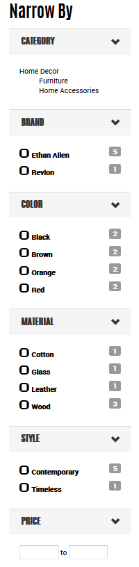
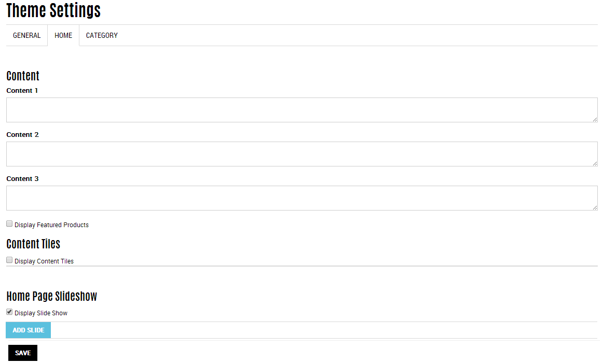

Sample Store Using Volusion Themes
Learn more about Volusion themes
Table of Contents
Method Theme
Let's take a look at an example store using one of our themes: Method! For a full list of supported and unsupported features for responsive themes, see this page.
Method is a great theme, focused usage currently on our sample store for clothing and accessories. Of course, you may modify and use this theme for just about any business. Clean lines, modern, and minimal in black and white to place all focus on your colorful products and slider.
What features does Method provide?
- Landing page with a slider and optional tiles for featured content.
- Navigation elements for your header with responsive design to shift into drop-down menus and expandable menus depending on your browser size and mobile device.
- Faceted search using filter categories in the storefront page navigation to narrow displayed category contents, provide a total number of items per filter, and update based on selections.
- Customized display options for product options including swatches, sizes, colors, and more. Options are directly associated with stock to dynamically show what is in stock for selected products.
- Custom and bootstrap styles used across the theme, extendable as needed.
- Reviews and stars based on those reviews per product.
- A
themeSettings.jsonfile is available for entering custom settings for the theme such as slides, footer content, and content tiles. This data can be directly edited or generated from your {domain}/theme-settings
Faceted Search
Filter categories have a refined design to create a form of faceted search. As shoppers browse the storefront, the theme displays filter categories in the left side navigation for narrowing and filtering the displayed products. Each selectable option includes a running tally of products matching the criteria, such as all products that are members of a blue or leather filter category.
The following JSON provides an example of a facet. It is an array of available filter categories for displaying products by brand. The title displays as the name of the facet. Each item in the array displays as a facet option to select.
id- The system generated ID for the filter category.name- The displayed name for the filter category.color- A hex value of a color for the category. This value cannot be entered within the Admin area and is strictly supported by code.image- An associated image file for the filter category.count- The total amount of products as a member of this filter category.
Sample JSON:
"facets": [
{
"id": 1840,
"title": "Brand",
"displayType": "checkboxes",
"properties": [
{
"id": 1841,
"name": "Ethan Allen",
"color": null,
"image": null,
"count": 5
},
{
"id": 1844,
"name": "Liz Claiborne",
"color": null,
"image": null,
"count": 3
},
{
"id": 1843,
"name": "Marc Jacobs",
"color": null,
"image": null,
"count": 3
},
{
"id": 1845,
"name": "Revlon",
"color": null,
"image": null,
"count": 1
}
]
},The following image is a display in the Method theme for these facets. Shoppers then can narrow by the listed categories or select directly any of the listed brands. This sample also includes facets for color, material, and style. Each facet has an associated set of filter categories with products as members. The numbered amounts are the available products as members of the filter categories. The price further refines the displayed products by a price range (based against price or sale price). All displayed products dynamically display according to the selections made.

Theme Settings
Your developed theme will have specific settings with default values that a merchant can modify when enabling or activating the theme. These settings typically include slide content (text and graphics), page text content, footer content, tiles, and more. The settings can be entered in a specific page for your domain by entering http://{domain}/theme-settings. If you turn on debugging mode, as you enter settings, the displayed content can be copied and saved into the themeSettings.json file. See the file in your {your repo}\method\app\settings\ folder all file contents and settings.
When you visit http://{domain}/theme-settings, you are taken to a specific page for entering customized content for the theme. You can save this content by editing the file directly, or using this location. This will create the default settings for the theme. Merchants using your theme can also use this page location to customize the theme without breaking into code directly. You can select the General, Home, and Category tabs to edit and save settings for those sections of the theme.
